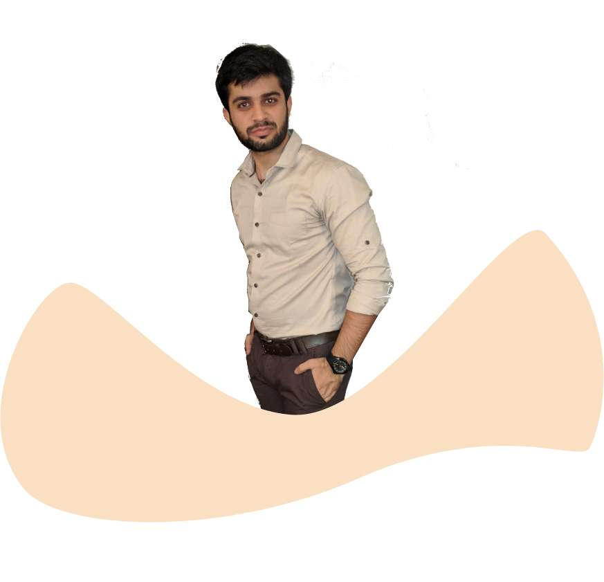

<div class="container-fluid">
    <div class="row">
        <div class="col-sm-5 aboutDeepak">
            <p class="h1" [ngStyle]="{'color': '#060141'}">Storyline</p>
            <p class="text-muted mt-3 ml-2">It's started by Mr.deepak Chawla for real consideration of Data science.And he started a<br>serval campaign related to data science.Lets get knowledge how he got the idea to start<br>a perfect hashtags for AI.<br>One day, he was sitting near his laptop while scrolling about data science information.<br>He realized that there are fewer hashtags in our data science information technology to<br>use and also for data science-related information to use and also we don't have a<br>particular hashtag for data science-related new information.So this makes a deeper<br>thinking in his mind.And he starts thinking.</p>
        </div>
        <div class="col-sm-7">
            
            
            
         </div>
</div>
